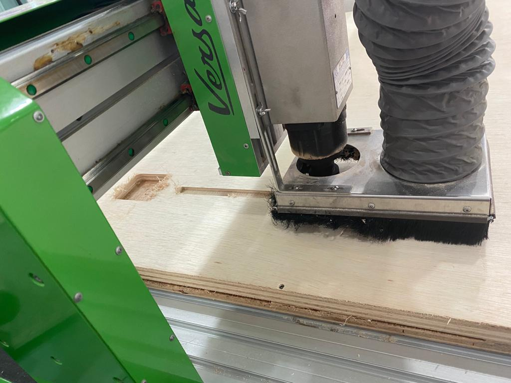
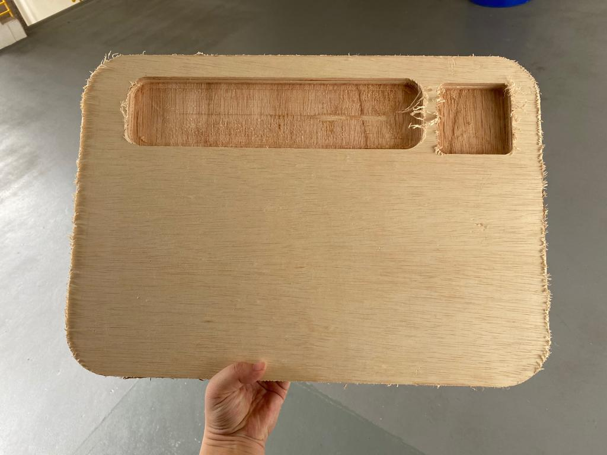
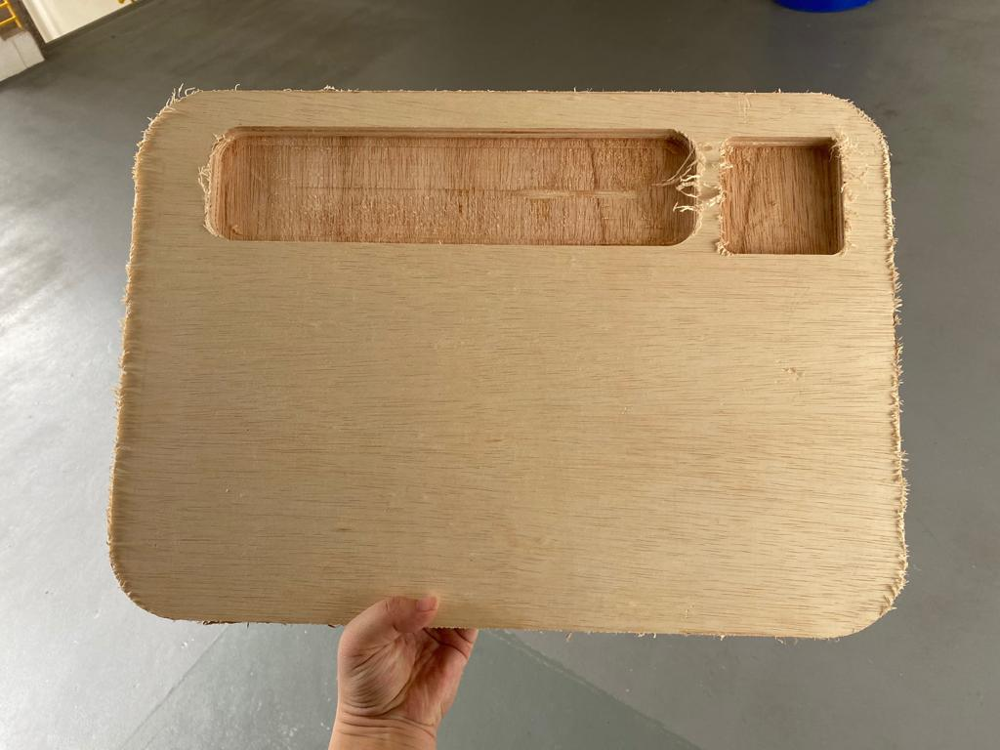

2D CNC
To use the CNC, we must first generate a Gcode for the machine to start milling. To do so I used Fusion360 to come up with the project which I want to make.

This file is the file which I want to use for my final project. This originally had 3 pockets however, for my final project I decided to only have 2 smaller pockets at the side. Once you have the desired design, save the surface sketch of the design as a DXF file.
The DXF can then be placed into the accompanying computer at the large CNC at T11C.
On the computer, we use Vcarvepro to format the file into a .tap file which is the file used for the CNC machine. Mainly, we have to set the surface depth as well as add tabs. I did not have any pictures of the process.
Next, before starting the cut, make sure to set your x, y and z axis. This process is similar to using the stepcraft at T14. Next, always make sure that there is someone with you when operating the large CNC as it is dangerous to do it yourself. As we are still students, always have a teacher with you when using the CNC.
 

When the machine is done cutting, the edges of the file is pretty 'hairy' with the wood shavings. To help this, I used one of the automated sanding machine to file down the edges to smoothen it.